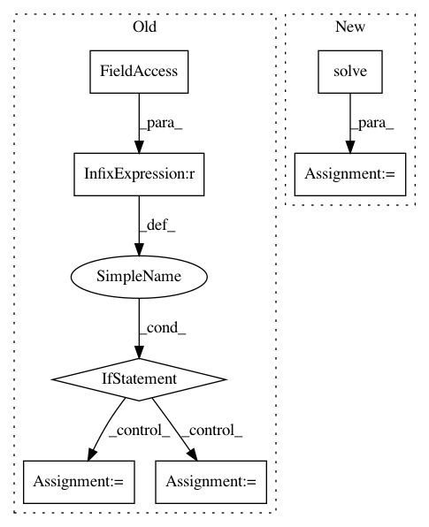

fb36a272cdeecb21992cfd9271eb82baafeb316d,examples/rotations_example.py,,,#,64
Before Change
return Xopt
if k == 1:
Xopt = sol(ABt)
else:
Xopt = np.array([sol(ABtk) for ABtk in ABt])
// print(Xopt)
print("This should be small: {error}\n".format(
error=np.linalg.norm(Xopt - X)))
After Change
error=np.linalg.norm(Xopt - X)))
if __name__ == "__main__":
main()
In pattern: SUPERPATTERN
Frequency: 3
Non-data size: 7
Instances
Project Name: pymanopt/pymanopt
Commit Name: fb36a272cdeecb21992cfd9271eb82baafeb316d
Time: 2020-01-26
Author: niklas.koep@gmail.com
File Name: examples/rotations_example.py
Class Name:
Method Name:
Project Name: Theano/Theano
Commit Name: 16a0b11cd04c8fc9b6d8cdbee56aee835d532b38
Time: 2016-11-17
Author: tfjgeorge@gmail.com
File Name: theano/tensor/slinalg.py
Class Name: Solve
Method Name: make_node
Project Name: sebp/scikit-survival
Commit Name: 12f048d741ba698f63860c4da48c6b85a599b606
Time: 2020-12-31
Author: sebp@k-d-w.org
File Name: sksurv/svm/minlip.py
Class Name: MinlipSurvivalAnalysis
Method Name: _fit